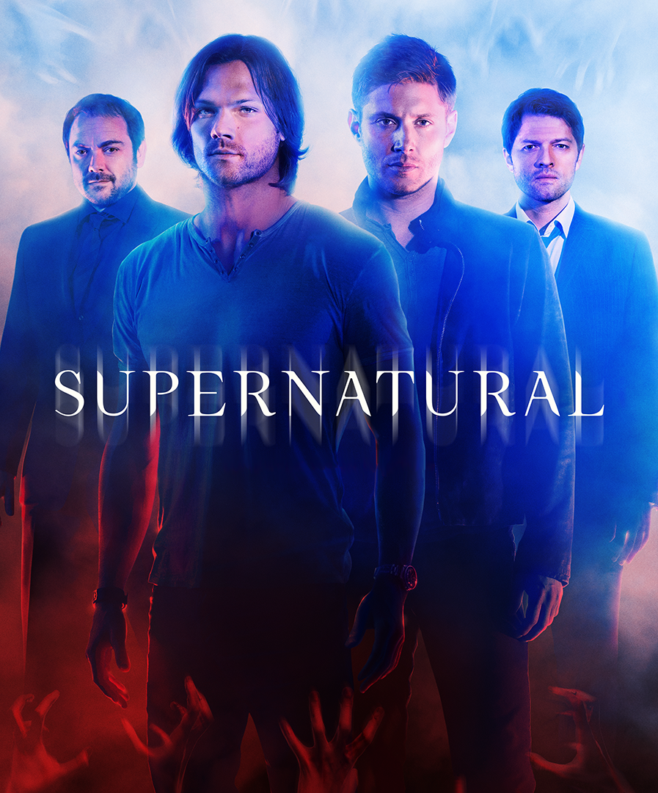

Supernatural
Temporadas
1 2 3
1 Pilot
2 Wendigo
3 Dead in the Water
4 Phantom Traveler
5 Bloody Mary
6 Skin
7 Hook Man
8 Bugs
9 Home
10 Asylum
11 Scarecrow
12 Faith
13 Route 666
14 Nightmare
15 The Benders
16 Shadow
17 Hell House
18 Something Wicked
19 Provenance
20 Dead Man's Blood
21 Salvation
22 Devil's Trap
Snipose
Two brothers follow their father's footsteps as "hunters" fighting evil supernatural beings of many kinds including monsters, demons, and gods that roam the earth.